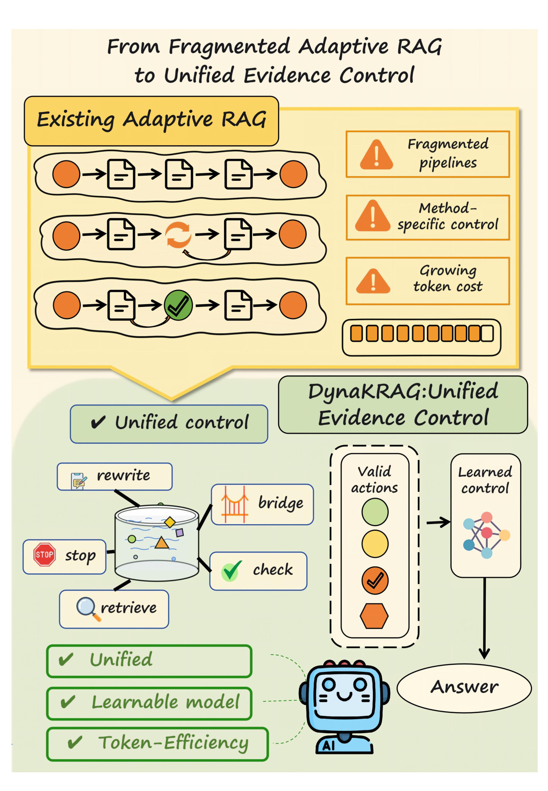
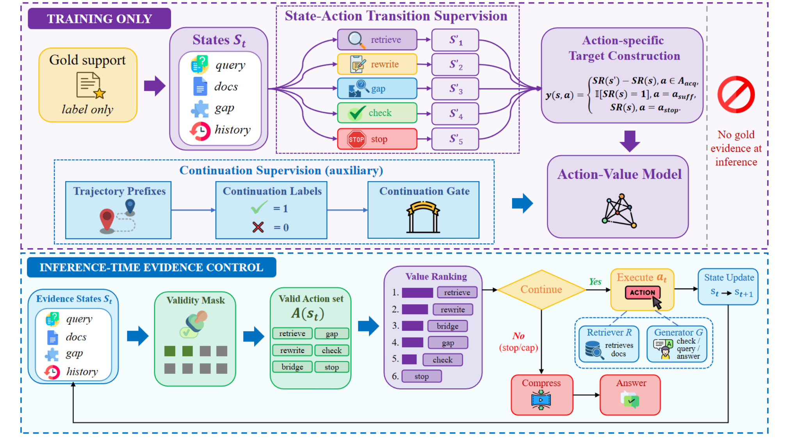
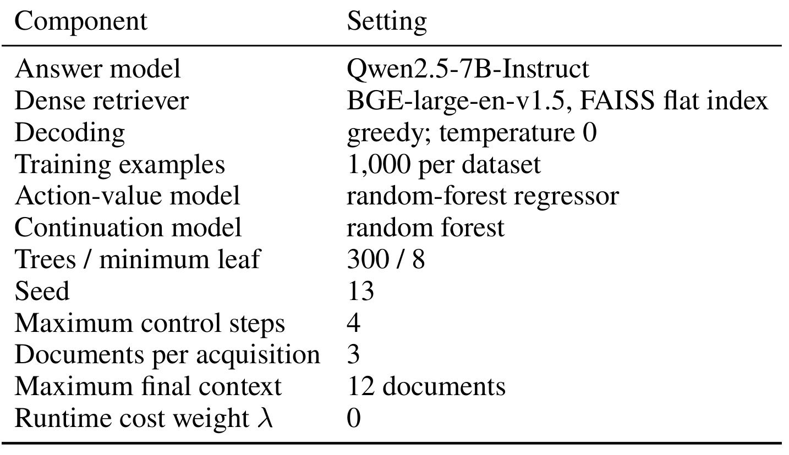
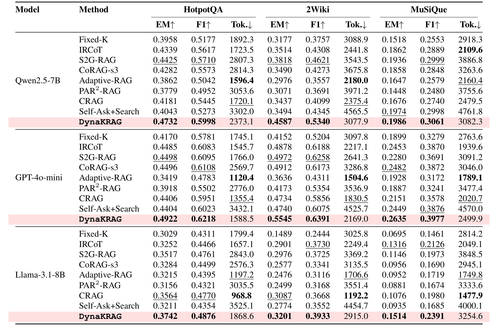
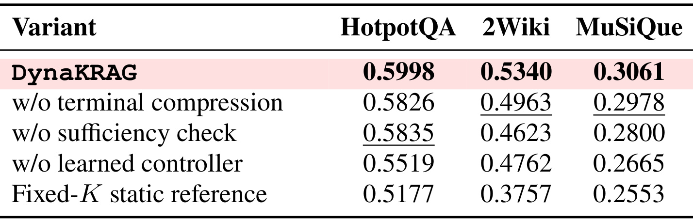
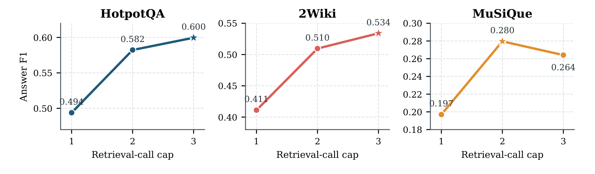
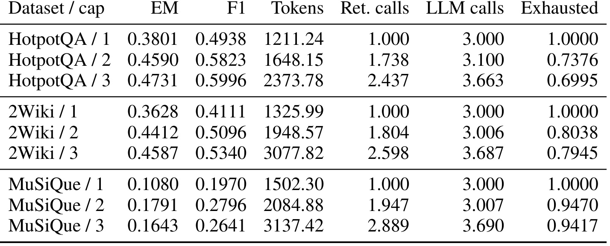
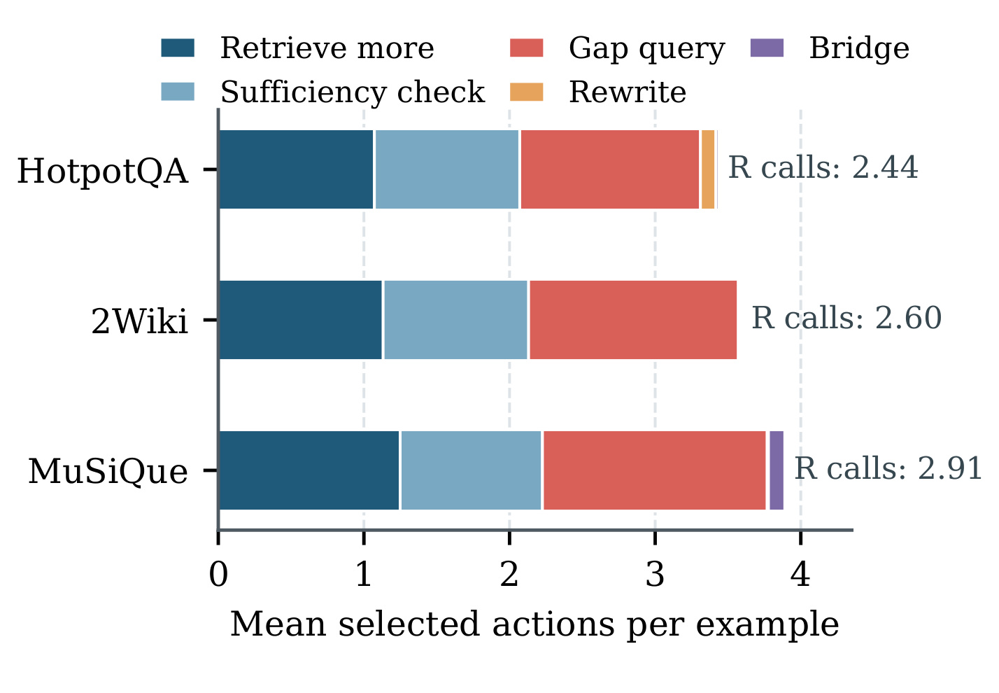
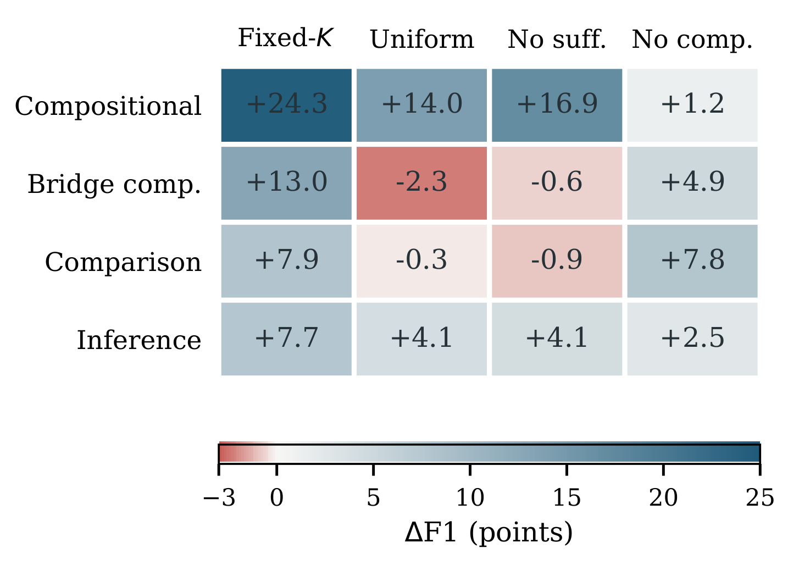
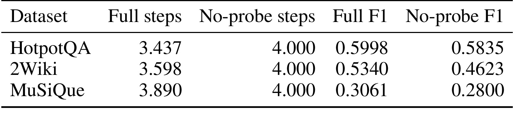

多校-DynaKRAG
DynaKRAG 讨论的是多跳问答场景里的 RAG 控制问题。论文来自上海交通大学、上海飞机制造有限公司、同济大学等机构，作者把它定位为一个可学习的 evidence control 框架：它不替换底层检索器，也不替换最终回答模型，而是在多轮取证过程中决定下一步应该执行什么证据操作。论文入口链接：arXiv:2607.06507。本轮未在 arXiv 摘要页或 PDF 中核验到独立代码仓库，因此代码状态记为“未核验到公开代码链接”。
这篇论文值得精读的原因不是它又提出一个新的 query rewrite 技巧，而是它把已有 adaptive RAG 中分散的动作重新抽象成统一的状态控制问题。多跳问题的难点在于，第一批证据往往不会直接给出答案，而是暴露新的实体、缺失关系、错误查询方向或已经足够回答的信号。固定检索深度、固定 rewrite-then-retrieve 流程、固定 critique 流程，都很难表达“当前证据状态下哪个动作是合法且最值得做”的决策。DynaKRAG 的核心贡献就是把这些动作放进同一个可执行动作集合，再用学习到的控制器排序。
1. 背景和问题
现有 multi-hop RAG 已经有迭代检索、查询改写、证据批判和充分性判断等动作，但它们大多被封装在各自固定流水线里，真正缺失的是一个能随证据状态变化、在当前有效动作之间学习选择的统一控制策略。
普通 RAG 的隐含假设是“先检索一组文档，再把文档交给生成模型回答”。这个假设在单跳事实问答中还算自然，但在多跳问题里很快失效。一个有用段落可能只给出中间实体，另一个段落可能说明关系方向，第三个段落才支持最终答案。更麻烦的是，第一轮证据不只是在补充上下文，它会改变后续检索意图：系统可能需要沿着 bridge entity 展开，也可能发现 query 本身不对，也可能需要先问生成模型当前证据是否充分。
论文引言里反复强调的“状态变化”很关键。多跳问题不是把同一个 query 多执行几次就能解决，因为每次检索后的证据都会改变下一次查询该怎么写、还缺哪条关系、是否需要检查充分性。固定流程把这些判断提前写死，容易出现两种错误：证据已经足够却继续扩展，导致上下文变长；或者只拿到中间实体却没有生成新的 gap query，导致后续检索仍围绕原问题空转。DynaKRAG 把这些错误统一成控制问题，而不是把它们分别修补成多个独立技巧。
DynaKRAG 的问题意识可以从 Figure 1 直接看出来。上半部分把 existing adaptive RAG 画成多条碎片化流水线：有的流程只会继续检索，有的流程会 rewrite，有的流程加入 check，但这些流程各自固定，控制逻辑被写死在方法里。下半部分则把 retrieve、rewrite、bridge、check、stop 放到同一个状态容器周围，再通过 valid actions 和 learned control 选择下一步。

Figure 1 的关键不是“图里有多少个动作”，而是动作之间的关系被改写了。传统 pipeline 里，动作顺序通常是方法作者预设的，例如先检索、再推理、再检索，或者先 critique、再 rewrite、再检索。DynaKRAG 则认为，每一步应该先看状态：已有文档是什么、frontier 到哪里、是否有 gap 描述、是否识别出 bridge entity、历史动作有没有耗尽预算。只有在状态允许时，某个动作才进入候选集合；随后再由控制器判断它的 utility。这样一来，系统不需要把“改写查询”和“继续检索”做成两个互斥方法，而是可以在同一条取证轨迹中按需切换。
这也解释了论文为什么强调 token efficiency。多跳 RAG 的成本不只是检索次数，还包括中间诊断、query 生成、最终 answer prompt 的长度。盲目扩大检索预算可能带来更多支持证据，也可能引入 distractor，让最终模型在更长上下文里分辨真正支持链。论文没有把“更多检索”当作默认收益，而是把是否继续检索、是否 gap-directed retrieval、是否已经可以 stop_answer 都作为状态条件下的控制动作。
从研究定位看，DynaKRAG 介于两类工作之间。一类是固定或半固定的 iterative RAG，例如按轮数重复 retrieve-and-read；另一类是 adaptive RAG，它会根据中间结果触发 critique、rewrite 或 sufficiency 判断。DynaKRAG 承认这些动作都有价值，但认为它们过去主要嵌在各自方法的 topology 里，难以在同一评价框架中学习和比较。本文的统一性来自两个分离：第一，action validity 和 action utility 分离；第二，训练时用 gold support 构造控制标签，推理时不再访问 gold evidence。
2. 方法
2.1 轨迹形式化和状态表示
论文把多跳证据获取写成一条轨迹：$\tau=(s_0,a_0,s_1,a_1,\ldots,s_T)$。初始状态 $s_0$ 包含问题和空证据历史；第 $t$ 步的状态 $s_t$ 汇总推理时可观察的信息，包括已检索文档、query 和 action 历史、retrieval frontier 统计、bridge entity 候选以及 missing-information feedback。一个硬规则函数先把状态映射为可执行动作集合 $A(s_t)$，控制器只在这个集合里选择 $a_t\in A(s_t)$。执行 $a_t$ 后得到新状态 $s_{t+1}$，而新状态又可能启用或禁用后续动作。
这个形式化有两个实用含义。第一，控制器不需要知道 gold answer、answer score 或 support recall 这些推理时不可见的信息；它用的是 question length、文档数量、title 去重、frontier position、retrieval score、question-evidence overlap、bridge entity count、action identity、历史动作次数和 action cost 等运行时特征。第二，控制器不是把检索器或回答模型替换掉，而是包在它们外面做 trajectory-level decision。底层 retriever 仍然可以是 BGE-large-en-v1.5 加 FAISS，answer model 仍然可以换成 Qwen2.5-7B、GPT-4o-mini 或 Llama-3.1-8B。

Figure 2 把整个方法拆成 training only 和 inference-time evidence control。训练侧用 gold support 只构造 state-action transition 的监督信号：一个动作如果让 support recall 增加，就获得更高 target；sufficiency 和 stop 也有各自的 target。推理侧没有 gold evidence，系统只看到当前 evidence state，经 validity mask 过滤后得到 valid action set，再由 value ranking 排序。这个图也说明了 continuation gate 的位置：它辅助判断是否继续轨迹，但真正的动作执行仍然要通过 valid action 和 value ranking。
2.2 原子 evidence actions 和 validity layer
DynaKRAG 的运行时动作可以分成 acquisition loop 和 terminal readiness 两类。取证循环里有五个主要动作：retrieve_more 推进初始排序 frontier 并加入未见文档；gap_query 使用 sufficiency probe 产生的 missing-information description 发起定向检索；rewrite_query 用已积累证据改写当前 query；bridge_entity_expand 围绕检测到的 bridge entity 检索；sufficiency_check 判断证据是否足以回答，若不足则写出缺失信息。stop_answer 终止取证。compress_answer_evidence 是终止后的 answer-readiness 操作，负责把累计文档压缩成更聚焦的支持片段，再交给最终生成器。
validity layer 是这篇论文最重要的工程分界：它不学习哪个动作更好，只负责排除当前状态下无定义、已耗尽、过早或冗余的动作。 例如，没有已检索证据时不能 rewrite 或 sufficiency_check；没有 gap 描述时不能 gap_query；没有 bridge candidate 时不能 bridge_entity_expand；检索预算耗尽时不能再执行检索型动作。这样做的好处是，学习器面对的不是全部动作空间，而是一个语义上可执行的子集 $A(s_t)$。
Table 5 在审计中保留为完整 caption 条目，但它本身是长文本动作条件清单，严格图像验证会把这种截图判为正文段落型对象，所以本文不把它作为图片插入。其核心条件仍然需要在方法里讲清楚：retrieve_more 的条件是 frontier 和 retrieval budget 仍然存在；gap_query 必须有非空 gap；rewrite_query 必须已经有 evidence；bridge_entity_expand 必须至少有一个 bridge candidate；sufficiency_check 需要已有 evidence 且 probe 在当前状态不冗余；stop_answer 由停止和 continuation 逻辑或 hard cap 启用；compress_answer_evidence 只在 acquisition 已终止后执行。换句话说，DynaKRAG 的“学习”不是放任模型自由调用工具，而是在可执行动作边界内学习排序。
2.3 控制器训练目标
action-value model 的训练目标来自支持证据召回变化。对 acquisition action，目标值是 $v(s,a)=SR(s')-SR(s)$，即动作执行后 supporting-document recall 的增量；对 sufficiency action，目标是 $v(s,a_{suff})=I[SR(s)=1]$，表示当前状态是否已经覆盖全部支持证据；对 stop action，目标是 $v(s,a_{stop})=SR(s)$，表示停止动作应当反映当前证据充分度。这里的 $SR(s)$ 只用于训练标签构造，推理时不会作为特征。
符号解释：$s$ 是当前 evidence state，$a$ 是候选动作，$s'$ 是执行动作后的新状态，$SR(s)$ 是当前状态覆盖 annotated supporting documents 的比例，$A_{acq}$ 表示取证类动作集合，$a_{suff}$ 表示充分性检查动作，$a_{stop}$ 表示停止回答动作。这个分段公式说明，取证动作按新增支持证据计分，检查动作按是否已充分计分，停止动作按当前证据充分度计分。
这个目标设计把不同动作放在同一尺度上比较。retrieve_more、gap_query、rewrite_query、bridge_entity_expand 都可以通过“是否新增支持证据”来评估；sufficiency_check 的价值则是判断证据是否已经充分，并在不足时生成 gap 描述；stop_answer 的价值来自当前证据状态本身。它避免了把每个动作训练成单独模块后再人工拼接，也避免了让 LLM 在推理时凭自然语言偏好决定是否继续检索。
这里也能看出训练和推理的边界。训练时可以用 annotated supporting documents 计算 $SR(s)$，但推理时控制器不能看到这些标注，否则就变成使用答案证据作弊。论文把 gold support 限定为 label construction，用运行时可见特征训练 action-value model。这样做牺牲了一部分表达能力，因为控制器不是直接读完整语义证据链；但它换来更清楚的因果边界：收益来自状态特征、validity 规则和动作排序，而不是来自推理时额外泄露的监督信号。
推理时，动作选择可以写成 $\arg\max_{a\in A(s_t)}[\hat{v}_\theta(s_t,a)-\lambda c(s_t,a)]$。论文主实验设置里 $\lambda=0$，所以收益不能被解释为显式 cost-sensitive optimization；成本项被记录，但主结论来自 value-based action ranking 和 validity filtering。执行动作后，状态更新到 $s_{t+1}$，可能产生新的 gap、bridge 或 sufficiency signal，因此下一步 $A(s_{t+1})$ 也会变化。
这种写法还避免了把“继续检索”和“停止回答”看成两个互不相干的模块。停止动作同样被放进动作集合，压缩动作则被放在终止之后。这样，系统可以把继续取证、诊断缺口、准备回答看成同一条轨迹上的阶段，而不是由外部脚本硬切换。对多跳任务来说，这种阶段感很重要：若缺失信息还没有被描述出来，继续检索可能只是增加噪声；若证据已经足够但上下文太散，压缩比继续检索更接近最终答案质量。

Table 4 给出默认实现：answer model 是 Qwen2.5-7B-Instruct，dense retriever 是 BGE-large-en-v1.5 加 FAISS flat index，解码为 greedy 且 temperature 为 0；每个数据集训练 1,000 个样本，action-value model 和 continuation model 都是 random forest，树数 300、最小叶子 8、seed 13；最大控制步数为 4，每次 acquisition 加 3 篇文档，最终上下文最多 12 篇文档，runtime cost weight $\lambda=0$。这些设置说明本文不是靠超大控制模型取胜，而是用相对轻量的监督控制器验证 action abstraction 是否有效。
2.4 终止、压缩和回答生成
取证终止有两种路径：控制器选择 stop_answer，或者达到 action/retrieval cap。终止后，报告配置会执行 compress_answer_evidence。这个操作要求生成模型从累计文档中抽取互相支持的片段，再让最终回答模型基于压缩状态回答。论文明确说 terminal compression 不进入公式 (1) 的 support-recall target，而是通过直接消融评估。原因是压缩不是继续找证据，而是在回答前整理已有证据。
这一点很容易误读。terminal compression 往往会增加一次 LLM call，也可能增加总 token，但它减少的是最终生成器在 noisy context 中定位证据链的负担。HotpotQA 和 2Wiki 使用最多 8 个 snippet、256-token compression limit 和 48-token answer limit；MuSiQue 因为三跳、四跳比例更高，使用最多 12 个 snippet 和 384-token compression limit。也就是说，DynaKRAG 的效率收益不是简单少调用模型，而是把 retrieval/action 预算分配给更有用的状态转换，并在最后用压缩改善 answer readiness。
3. 实验结果
3.1 主结果：跨回答模型仍然有效
实验覆盖 HotpotQA、2Wiki 和 MuSiQue 三个多跳问答数据集，主指标是 normalized EM 和 token-level F1，同时记录 token use、retrieval calls 和 LLM calls。基线包括 Fixed-K RAG、IRCoT、S2G-RAG、CoRAG、Adaptive-RAG、PAR2-RAG、CRAG 和 Self-Ask+Search。论文强调所有同 backbone 方法共享 corpus、retrieval resources 和 evaluation code，因此比较重点是控制策略，而不是底层检索资源不同。

Table 1 的主结果很集中。用 Qwen2.5-7B-Instruct 作为回答模型时，DynaKRAG 在 HotpotQA、2Wiki、MuSiQue 上分别达到 F1 0.5998、0.5340、0.3061，超过最强 controlled baseline 2.88、7.19、0.62 个点。换成 GPT-4o-mini，F1 分别是 0.6218、0.6391、0.3977，也都超过同 backbone 的最强基线。更重要的是，控制器是用 Qwen2.5-7B 轨迹训练的，却能迁移到 GPT-4o-mini 和 Llama-3.1-8B-Instruct；在六个非 Qwen 的 dataset-backbone 组合里，它领先五个，剩下一个 2Wiki-Llama 也接近最好 baseline。
token 结果也支持论文的效率论证。与 S2G-RAG 这个强 F1 基线相比，DynaKRAG 在 Qwen 主实验里把 HotpotQA 平均 token 从 2807.3 降到 2373.1，把 2Wiki 从 3543.5 降到 3077.9，把 MuSiQue 从 3886.8 降到 3082.3，同时 F1 更高。这里不能把 Fixed-K 的 token 直接拉进同一结论，因为论文说明 fixed-K artifact 的 prompt-token 统计口径不同；但在 iterative methods 之间，DynaKRAG 的 total-token accounting 是可比的。
3.2 组件消融：仅暴露动作空间不够

Table 2 说明完整方法不是因为“动作更多”自然变好。把 learned controller 换成 seeded uniform-valid policy 后，HotpotQA、2Wiki、MuSiQue 分别下降 4.79、5.78、3.96 个 F1 点。也就是说，valid action set 只是保证动作合法，真正带来收益的是对当前状态下哪个动作更有用的排序。去掉 sufficiency check 也会让三项数据集全掉点，尤其 2Wiki 从 0.5340 降到 0.4623，说明 sufficiency probe 不只是停止判断，它产生的 missing-information description 会驱动后续 gap-directed retrieval。去掉 terminal compression 同样下降，说明回答前证据整理对最终生成有贡献。
这个消融还有一个隐含结论：DynaKRAG 的控制器并没有简单学成“尽量多检索”。如果只是动作空间变大，那么 uniform-valid 应该也能接近完整方法；如果只是压缩改善最终回答，那么去掉 controller 不应明显掉点。实际结果显示，排序、诊断、压缩三者各自有贡献，其中排序和 sufficiency feedback 是控制链路的关键。
从数值幅度看，2Wiki 对 sufficiency check 尤其敏感。去掉该动作后 F1 从 0.5340 下降到 0.4623，比去掉 terminal compression 的下降更大。这与 2Wiki 的 compositional/comparison 结构一致：很多问题不是缺一篇文档，而是缺某个中间关系或实体连接。sufficiency probe 能把“还答不了”的原因转写成 missing-information description，后续 gap_query 才有明确方向。没有这个环节，控制器虽然仍有检索预算，却更容易在原始 frontier 上继续推进。
3.3 检索预算：更多 retrieval 不是单调收益

Figure 3 是论文反驳“只是多检索”的核心证据。HotpotQA 和 2Wiki 在 cap 从 1 增到 3 时持续提升，HotpotQA 从 0.4938 到 0.5996，2Wiki 从 0.4111 到 0.5340；但 MuSiQue 在 cap=2 时达到 0.2796，cap=3 反而降到 0.2641。也就是说，多跳问题并不自动从更多检索中受益，尤其当任务需要更长组合链时，额外文档可能带来干扰或让最终上下文更难压缩。图中三个数据集的曲线形态不同，也提醒读者不要把 retrieval-call cap 当成通用超参数：同样增加一次检索，在 HotpotQA/2Wiki 上可能补足缺失事实，在 MuSiQue 上却可能把多跳链条推向更多噪声。

Table 6 补充了完整数值和 exhausted 比例。MuSiQue 从 cap=2 到 cap=3 时，retrieval calls 从 1.947 增到 2.889，tokens 从 2084.88 增到 3137.42，但 F1 下降。这直接说明“预算变大”不是充分条件。HotpotQA、2Wiki 的 exhausted 比例在 cap=3 也仍然很高，表示该实验是受控预算分析，不是系统经常自动早停的证据。DynaKRAG 的价值在于，它在既定上限内把动作分配给 frontier retrieval、gap query、bridge expansion 或 sufficiency check，而不是重复执行单一 retrieval 操作。这个表还让 token 成本的讨论更具体：MuSiQue 多消耗一千多个 token 后反而掉点，说明检索控制不仅关心省钱，也关心避免把错误或边缘证据塞进最终上下文。
3.4 控制器实际选择了什么动作

Figure 4 展示 learned action composition。三个数据集里，控制器稳定组合 frontier retrieval、sufficiency check 和 gap query：HotpotQA 平均 retrieval-producing actions 为 2.44，2Wiki 为 2.60，MuSiQue 为 2.91。rewrite 和 bridge 的比例很低。这并不表示 rewrite/bridge 没价值，而是说明在这组实验和特征设计下，显式 gap query 更常成为诊断后的主要补证方式。这个结果也降低了“控制器只是随机调用工具”的可能性，因为动作组成在不同数据集上有稳定结构。更细看图中颜色，retrieve_more 通常承担打开初始证据面的作用，sufficiency_check 负责把“还缺什么”显式化，gap query 则把这个缺口转成下一次检索意图，三者形成闭环。
Table 7 在审计中保留为完整 caption 条目，但由于原表只有很矮的三行统计，单独截图对象高度低于严格验证阈值，本文不把它作为图片插入。它的关键数值仍然在这里转述：HotpotQA 的 retrieve、sufficiency、gap 分别约为 1.072、0.998、1.241；2Wiki 为 1.132、0.999、1.440；MuSiQue 为 1.249、0.977、1.543。三者都几乎每题做一次 sufficiency check，并且 gap query 平均次数超过 retrieve_more。这支持论文对 sufficiency probe 的解释：它不是单纯问“能不能答”，而是在不能答时提供缺失信息，成为 gap-directed retrieval 的输入。
3.5 问题结构和 sufficiency 诊断

Figure 5 把 2Wiki 问题按 compositional、bridge-comparison、comparison、inference 分组。相对 Fixed-K，DynaKRAG 在 compositional 上提升 24.3 个 F1 点，在 bridge-comparison 上提升 13.0 点，在 comparison 上提升 7.9 点，在 inference 上提升 7.7 点。最大收益来自需要拼接多段事实的 compositional 问题，这与方法动机吻合：当证据需求沿着轨迹变化时，状态依赖动作控制比固定检索更有价值。也可以看到，在某些 comparison-oriented bucket 上，uniform 或 no-sufficiency 个别格子并不总是输给 full controller，说明 learned control 还有优化空间，并不是所有结构都被同一策略完全解决。

Table 8 进一步说明 sufficiency probe 的作用。去掉 probe 后，三个数据集的 no-probe steps 都达到 4.000，也就是每个样本都走到最大步数；完整方法的平均步数分别为 3.437、3.598、3.890，F1 则全部更高。这个结果支持两个判断：第一，probe 让控制器获得“是否足够”和“缺什么”的状态信息，避免盲目走满上限；第二，即使完整方法并不频繁早停，它仍然能通过 probe 产生的 gap 信息改善后续取证。表中 HotpotQA、2Wiki、MuSiQue 的 full F1 全部高于 no-probe F1，说明 probe 同时影响轨迹长度和证据质量，而不是只减少一次无关调用。
综合实验看，DynaKRAG 的证据链比较完整。主结果证明跨 backbone 有收益；组件消融证明 learned controller、sufficiency check 和 terminal compression 都有贡献；retrieval-cap sweep 证明更多检索不是单调收益；action composition 说明控制器实际偏向 gap-directed acquisition；question-structure analysis 则把收益定位到 compositional multi-hop 场景。它的不足也很清楚：控制器用 random forest 和手工运行时特征，动作集合仍由作者设计，cost term 在主实验中没有真正启用，且代码未核验到公开仓库。
还有一个值得谨慎解读的点是 early stopping。论文的完整方法平均步数低于 no-probe，但 cap sweep 的 exhausted 比例仍然很高，尤其 MuSiQue 在 cap=3 时 exhausted 达到 0.9417。这说明当前系统还不是一个非常激进的“能少做就少做”的控制器，而更像是在有限步数内把动作类型分配得更合理。若要把它部署到实际问答系统，下一步可能不是单纯追求更高 F1，而是让 continuation model 和 cost term 更主动地参与 stop/continue 决策。
4. 总结
DynaKRAG 的核心价值是把 adaptive RAG 从“方法内部流程”提升为“状态条件下的证据动作控制”。它没有声称某个单一操作万能，而是把 retrieve_more、gap_query、rewrite_query、bridge_entity_expand、sufficiency_check、stop_answer 和 terminal compression 放进一条 evidence trajectory。硬规则决定当前哪些动作合法，学习器决定合法动作里哪个更有用。这个分工让系统既不会调用无意义动作，也不会把所有控制逻辑写死成固定 pipeline。
这篇论文最适合被当作“控制层设计”来读，而不是只读成一个多跳问答 leaderboard 结果。它把 RAG 系统中常见的若干工具动作变成可审计对象：每个动作有状态转移、有有效性条件、有训练目标、有成本记录。这样的抽象可以帮助后续工作比较不同动作到底贡献在哪里，也可以避免把复杂 agent/RAG 系统写成不可解释的长 prompt 流程。
如果从可复现和工程落地角度看，这篇论文有四个需要继续观察的限制。第一，训练标签依赖 supporting-document annotations，适合 HotpotQA、2Wiki、MuSiQue 这类有支持证据标注的数据集，但真实业务问答往往没有同等粒度标注。第二，控制器特征较工程化，random forest 虽然轻量，但泛化到更复杂工具和跨领域 corpus 还需要更多验证。第三，主实验里 $\lambda=0$，所以 token efficiency 主要来自动作选择结果，而不是显式成本优化；如果要部署到高并发系统，成本项需要真正参与训练或在线调参。第四，rewrite 和 bridge 在实际动作组成中很稀疏，说明这些动作的触发条件、特征或收益估计可能还没有充分发挥。
后续值得跟进三条线。第一，看作者是否公开代码和 action trace，这会决定能否复现实验中的 validity layer、state features 和 support-recall target。第二，把 DynaKRAG 与更强的 LLM controller 或 bandit/RL 控制器比较，观察轻量 random forest 是否只是一个低成本基线，还是已经足够稳定。第三，把显式 cost-sensitive objective 打开，检查 $\hat{v}_\theta(s_t,a)-\lambda c(s_t,a)$ 中不同 $\lambda$ 是否能在 F1、token、latency 之间形成可控 Pareto 曲线。
对推荐和搜索系统的启发在于，复杂检索链路中很多动作本来就有合法性约束：候选池是否耗尽、是否有可扩展实体、是否有缺失槽位、是否已有足够证据、是否值得进入更重 reranker。DynaKRAG 提供的不是一个可直接照搬的 RAG 模块，而是一种控制架构：先把动作定义成可审计的原子操作，再把 validity 和 utility 分开，让模型只在合法动作之间学习选择。对于多跳问答，这个选择体现为 evidence acquisition；对于更广义的信息检索系统，它也可以被理解成“在状态变化中选择下一步证据或算子”的决策层。